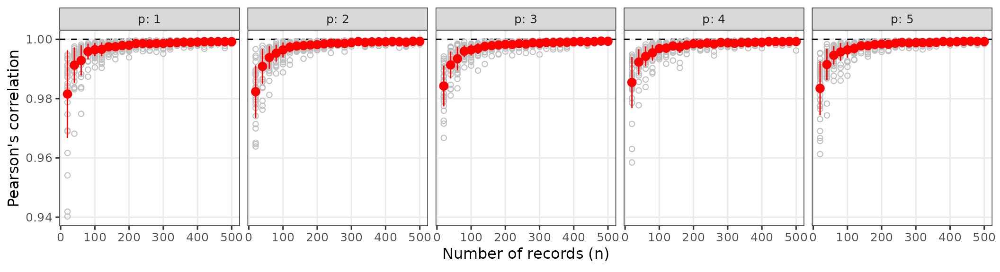
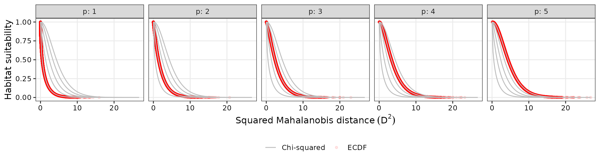
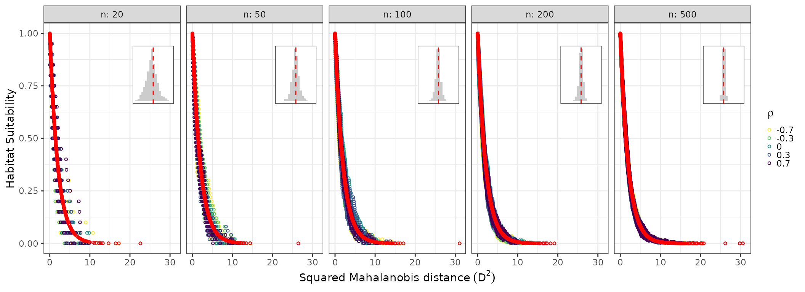
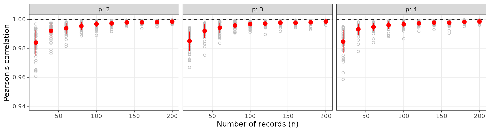
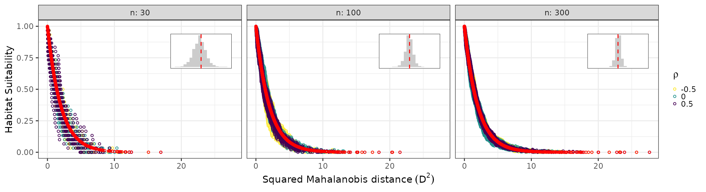

ECDF and Mahalanobis Distance for Empirical Niche Modeling
Luíz Fernando Esser
ecdfniche_comparison.RmdIntroduction
This vignette shows how to use the ECDFniche package to reproduce the simulations from the original manuscript, comparing Mahalanobis distance–based suitability transformations using the chi-squared distribution and the empirical cumulative distribution function (ECDF).
We follow a virtual ecologist approach (Zurell et al. 2010) to evaluate how different transformations of the Mahalanobis distance recover a simulated niche across varying dimensionalities (number of predictor variables) and sample sizes (number of records), and then extend the analysis to a bivariate non-normal environmental space.
Multivariate normal niche: ecdf_compare_niche()
In the first set of simulations, we assume that the environmental predictors describing a species’ niche follow a multivariate normal distribution.
Dimensions range from 1 to 5, and sample sizes range from 20 to 500 in steps of 20, mimicking increasing numbers of occurrence records.
For each combination of
and
,
ecdf_compare_niche():
- Draws a fixed covariance matrix by sampling from a Wishart distribution with degrees of freedom and scale matrix set to zero with a diagonal of 1, ensuring a positive-definite covariance for that combination.
- Generates 30 independent replicates of records from a -variate normal distribution with mean vector (interpreted as the environmental optimum) and covariance matrix .
- For each replicate, estimates the sample mean and sample covariance and computes the squared Mahalanobis distance
- Computes two suitability metrics for every record:
Theoretical chi-squared suitability: where is the cumulative distribution function of the chi-squared distribution with degrees of freedom.
Empirical ECDF-based suitability: where is the empirical cumulative distribution function of the distances.
- Calculates Pearson’s correlation coefficient between and for each replicate.
This setup mimics a realistic ENM scenario where multivariate means and true covariances are unknown and must be estimated from occurrence records drawn from a correlated environmental space representing the species’ theoretical niche (sensu Hutchinson 1978).
set.seed(1991)
normal_res <- ecdf_compare_niche(
p_vals = 1:5,
n_vals = seq(20L, 500L, 20L),
n_reps = 30L
)Figure 1: Correlation vs sample size
cor_plot summarizes, for each
and
,
the mean and standard deviation of the correlation between chi-squared
and ECDF suitabilities across the 30 replicates, with individual
replicate values shown as grey points. The plot shows the correlation
between suitability metrics estimated using the chi-squared and the
Empirical Cumulative Distribution Function (ECDF) across sample sizes
and numbers of environmental predictors. Each panel shows Pearson
correlation coefficients as a function of the number of occurrence
records for a given dimensionality p (1 to 5 variables). Correlations
are generally very high (rarely < 0.95), increasing with sample size
and slightly increasing with dimensionality.
normal_res$cor_plot
Figure 2: Suitability vs Mahalanobis distance
suit_plot pools observations across sample sizes for
each
,
recomputes an ECDF-based suitability on the combined distances, and
compares these to chi-squared curves. The plot shows the relationship
between squared Mahalanobis distance (x-axis) and environmental
suitability metrics (y-axis) estimated using the chi-squared and the
Empirical Cumulative Distribution Function (ECDF) across different
numbers of environmental predictors. Grey curves represent the habitat
suitability based on the chi-squared distribution while red circles
represent habitat suitability via ECDF, highlighting that ECDF closely
tracks the theoretical chi‑squared mapping over the distance range.
normal_res$suit_plot
Non-normal bivariate niche: ecdf_nonnormal_niche()
In many real ENM applications, environmental covariates are not jointly normal and species can show complex responses to environmental gradients (Anderson et al. 2022).
To explore this, ecdf_nonnormal_niche() simulates a
bivariate environmental space for temperature and precipitation using a
Gaussian copula:
- Temperature follows a normal distribution with mean 20 °C and standard deviation 5 °C.
- Precipitation follows a Weibull distribution with shape 2 and scale 10 mm, representing skewed rainfall data.
- The dependence between the two variables is controlled by a correlation parameter , reflecting negative to positive associations observed in climatological studies (e.g. Anderson et al. 2019).
For each , the function:
- Uses a Gaussian copula with correlation to generate a large reference sample of size (default ) and derive “true” population mean vector and covariance matrix for the bivariate distribution.
- For each combination of and sample size , draws replicate samples directly from the copula-based bivariate non-normal distribution.
- Computes squared Mahalanobis distances using the true mean and covariance from the reference sample, isolating the effect of non-normality from parameter estimation error.
- Calculates:
- Chi-squared suitability , which is theoretically “wrong” under non-normality but serves as the standard parametric benchmark.
- ECDF-based suitability .
- Returns per-replicate correlations and observation-level data, plus a summary plot comparing the two suitabilities.
set.seed(1991)
nonnormal_res <- ecdf_nonnormal_niche(
rho_vals = c(-0.7, -0.3, 0, 0.3, 0.7),
n_vals = c(20L, 50L, 100L, 200L, 500L),
n_reps = 10L,
N_ref = 1e5,
temp_function = "qnorm",
temp_parameters = list(mean = 20, sd = 5),
prec_function = "qweibull",
prec_parameters = list(shape = 2, scale = 10)
)Figure 3: Suitability vs distance under non-normality
suit_plot shows ECDF-based suitability (colored by
)
and chi-squared suitability (red points) as functions of
,
faceted by sample size. Plots highlight the sensitivity of chi-squared
and ECDF suitability metrics to sample size and variable correlation in
non-normal bivariate data. Internal histograms represent the
distribution of ECDF-based values around the chi-squared-based
suitability. The ECDF estimator shows higher stochasticity in small
samples but converges to the chi-squared expectation in larger
samples.
nonnormal_res$suit_plot
#> Warning: Removed 2 rows containing missing values or values outside the scale range
#> (`geom_bar()`).
#> Removed 2 rows containing missing values or values outside the scale range
#> (`geom_bar()`).
#> Removed 2 rows containing missing values or values outside the scale range
#> (`geom_bar()`).
#> Removed 2 rows containing missing values or values outside the scale range
#> (`geom_bar()`).
#> Removed 2 rows containing missing values or values outside the scale range
#> (`geom_bar()`).
Customizing simulations
You can customize key aspects of both simulations to reproduce or extend the analyses:
-
Multivariate normal niche
(
ecdf_compare_niche()):-
p_vals: set of dimensions (e.g.1:10) to evaluate high-dimensional behavior. -
n_vals: sample size grid, e.g. smallernto explore the effect of limited records. -
n_reps: number of replicates per combination for more stable summaries.
-
res_custom_normal <- ecdf_compare_niche(
p_vals = 2:4,
n_vals = seq(20L, 200L, 20L),
n_reps = 50L,
seed = 42
)
res_custom_normal$cor_plot
-
Non-normal bivariate niche
(
ecdf_nonnormal_niche()):-
rho_vals: alternative dependence structures. -
n_vals,n_reps: sample size and replication design. -
N_ref: reference population size; larger values approximate the true parameters more closely.
-
res_custom_nonnorm <- ecdf_nonnormal_niche(
rho_vals = c(-0.5, 0, 0.5),
n_vals = c(30L, 100L, 300L),
n_reps = 20L,
N_ref = 5e4,
temp_function = "qnorm",
temp_parameters = list(mean = 20, sd = 5),
prec_function = "qweibull",
prec_parameters = list(shape = 2, scale = 10),
seed = 123
)
res_custom_nonnorm$suit_plot
#> Warning: Removed 7 rows containing non-finite outside the scale range
#> (`stat_bin()`).
#> Warning: Removed 2 rows containing missing values or values outside the scale range
#> (`geom_bar()`).
#> Removed 2 rows containing missing values or values outside the scale range
#> (`geom_bar()`).
#> Removed 2 rows containing missing values or values outside the scale range
#> (`geom_bar()`).
Together, these simulations illustrate when the traditional chi-squared transformation is reliable and when the ECDF-based approach provides a more robust mapping from niche-based distances to habitat suitability, particularly when environmental covariates deviate from multivariate normality.